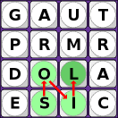
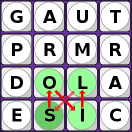
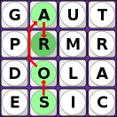

When the timer starts, each player searches the assortment of letters for words of three letters or more. When you find a word, type it into the blank and hit ENTER.
Words are formed from adjoining letters. Letters must join in the proper sequence to spell a word. They may join horizontally, vertically, or diagonally, to the left, right, or up-and-down. No letter cube, however, may be used more than once within a single word.

Figure 1 shows how a word can be formed using the adjoining letters S, O, I, L.

Figure 2 shows an incorrect spelling technique: you can only use each cube once within a given word.

Figure 3 shows an incorrect spelling technique: no skipping is allowed; letters must be adjacent.
Any word (noun, adjective, adverb, etc.) is acceptable as long as it can be found in WEBoggle's fairly complete dictionary. Plural nouns are allowed, as are all verb tenses. Words within words are also permissible; e.g.,spare: spa, par, are, spar, pare. Proper names, abbreviations, contractions, hyphenated words and foreign words are not accepted.
After three minutes, no more words will be allowed. Each word will be scored as follows:
| Letters: | 3 | 4 | 5 | 6 | 7 | 8 or more |
|---|---|---|---|---|---|---|
| Points: | 1 | 1 | 2 | 3 | 5 | 11 |
(The "Qu" cube counts as two letters.) The winner is the player whose words have earned the most points. After a 30 second break, a new round will start, with a new random board.
WEBoggle is based on Boggle, created by Parker Brothers. Please don't sue!